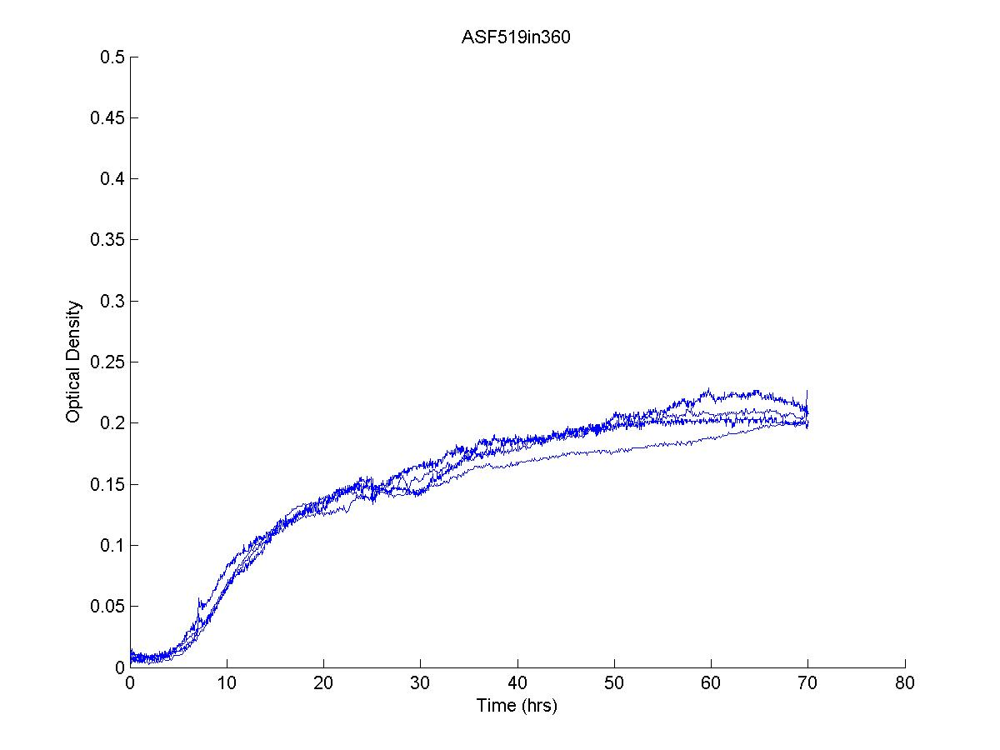

Overview
Welcome to the code guide for this project repository, containing data and associated analysis scripts related to the bioinformatic and in vitro characterization of the Altered Schaedler Flora (ASF).
Comparative Bioinformatic Analysis of Gene Functional Categories
All code, data, and results files relating to the bioinformatics comparison of 15 wild murine metagenomes with the ASF composite metagenome. The README file contains specific information about the contents.
Spent Media Experiments
Defined Growth Media
Instructions to make Supplemented LB which supports growth of 7/8 ASF members.
Growth Curves
Growth curves files (optical density) are available in the folder "GrowthCurves/SpentMediaGrowthCurveData/".
The R script "plot_growth_curves.R" reads in the growth curve files and organizes them into a single plot ("ASF_SpentMedia_GrowthCurves.tiff"). It further calculates the area under each curve and outputs those into a tab-separated file ("auc_inhibitions_all_pairs.tsv").
Metabolomics
NMR peak integral files and sample metadata are available in the folder "Metabolomics/NMR_Integrals/".
The R script "metabolomics_analysis_and_plotting.R" reads in the peak integral file and calculates z-scores for each sample with respect to fresh media. This script plots the first round of data and the second round (ASF492 re-do samples) in ("ASF_metabolite_zscores_plots.pdf") which allows for comparisons between the two batches of data. The R script further plots the z-scores as heat maps, counts the different categories of metabolite changes between conditions, and identifies emergent metabolic phenotypes.